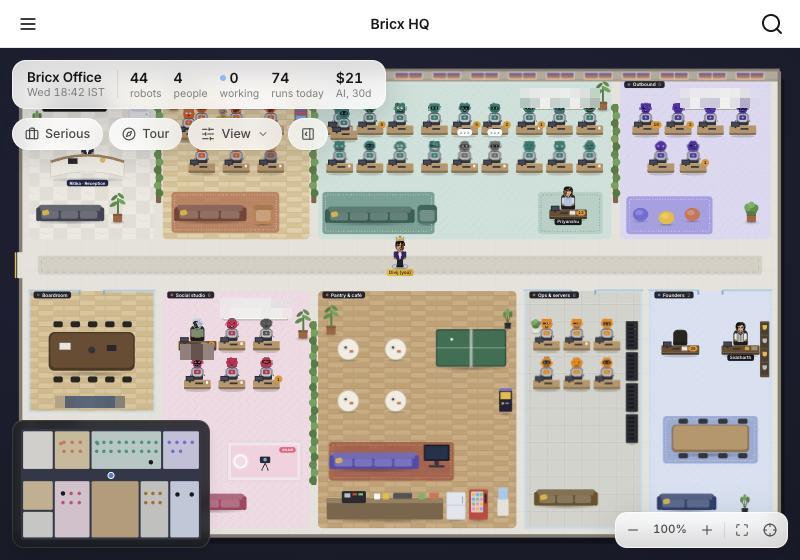
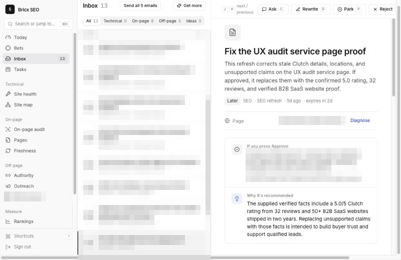
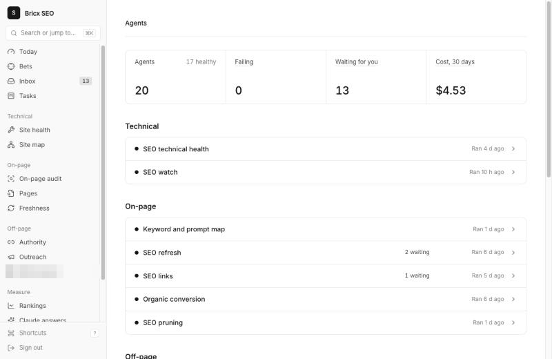
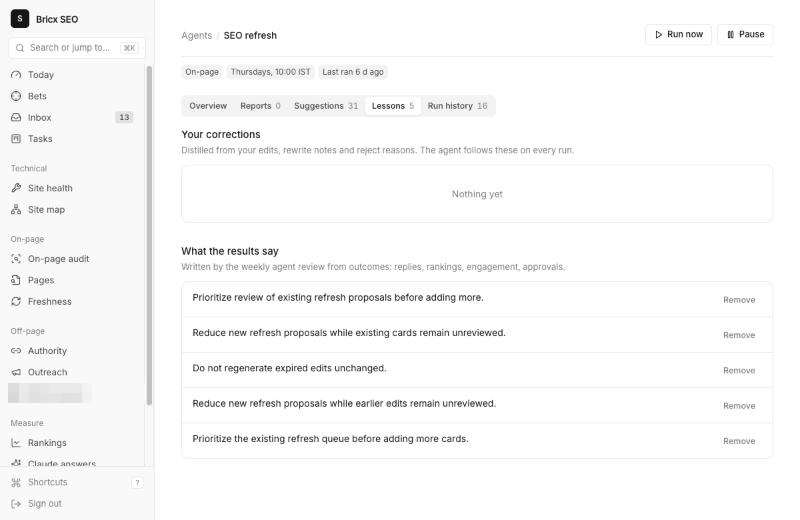
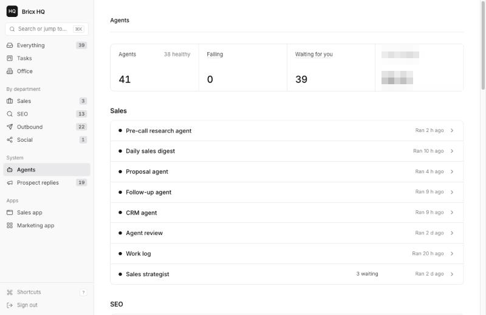
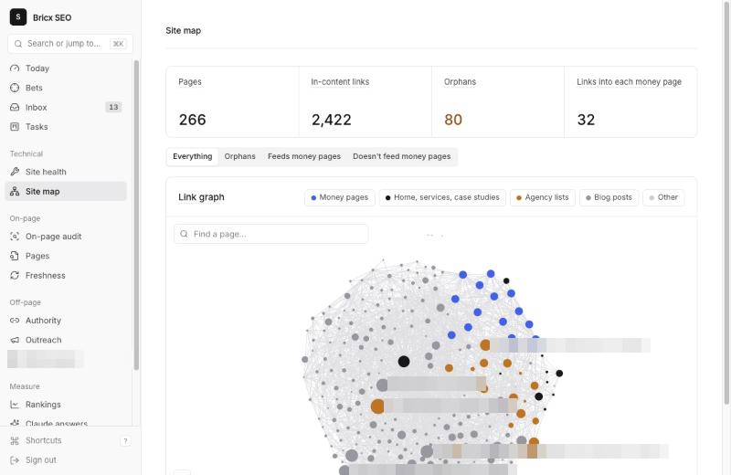

I run the marketing at Bricx from an office that doesn't exist.
It's a pixel-art floor plan. Sales sits top left. SEO takes the big room in the middle. Outbound is in the corner, Social is downstairs, and the servers hum in the room next to the founders.
Almost every desk has a robot at it. When an agent is running, its robot is working. When it needs me, a badge pops up over its head.

I built the office as a joke. It turned out to be the best way to see what my team is doing.
Because my team is mostly agents.
This post is the whole office. First the org chart, then every agent that does a distinct job: what it reads, what one run actually does, what it hands back, and what it is never allowed to do.
I've left out the copies. Each department has the same daily inbox ping and the same kind of strategist, so you'll see each of those once. A few paused agents are left out too. That leaves 32 files.
01 · WhyI don't like managing people through repetitive work
Checking that the review count on 266 pages is still right. Pulling the same Search Console report every Monday. Reading every funding announcement for a company we could help. Writing the third follow-up email.
A person doing that work gets bored, then sloppy, then leaves. And I spend my week reminding, checking and re-explaining.
An agent doesn't get bored. You train it once, give it direction, and it does the job at 9 am on a Saturday exactly the way it did on Monday.
It's faster than me. On a lot of these jobs it's smarter than me too, because it actually reads every row.
What it doesn't have is judgement. Taste. The gut feeling that a deal is about to go cold, or that a page is technically right and still sounds wrong.
Judgement and craft. Gut feel. Narrowing a fuzzy goal into something clear enough to execute.
Execution and scale. The same job, done the same way, every time, across every page and every account.
02 · The org chartWho reports to whom
The office is set up like a company. I sit at the top. Each department has a strategist that proposes at most three bets a week, and workers that each own one job. Two agents do the shipping: the website release for SEO and the sequencer for outbound.
Across all of it sit the reviewers. They don't do marketing. They check the agents that do.
- Pre-call research
- Proposals
- Follow-ups
- CRM
- Daily digest
- Scorecard
- Watch
- Technical health
- Keyword map
- Refresh
- Internal links
- Conversion
- Pruning
- Brand truth
- Claude tracker
- Competitor watch
- List placements
- Link building
- Directory content
- SEO weekly
- Funding
- Design jobs
- Website visitors
- Social ideas
- Social performance
Bets flow up to me. Approved bets flow down as tasks. Anything that needs judgement comes back up as a card. Everything else ships on its own.
03 · How it's builtOne app, one clock, one rulebook
Every agent lives in one codebase. Each one is a single file with a name, a schedule and one job. An hourly clock wakes up, checks who is due, and runs them.
- One source of truth per fact. Search Console and Bing for search. GA4 for what visitors do. Peec for how ChatGPT, Perplexity and Google's AI talk about us. Call transcripts for what buyers said.
- One facts file. Our rating, review count, location, the clients we can name. If a claim isn't in that file, no agent may write it.
- Two models, chosen by job. A cheap model for routine judgement, a stronger one for anything a human will read. Claude runs the Claude tracker.
- A hard budget. When the month's AI spend hits the cap, every agent drops to the cheap model until the month ends.
- Cards, not messages. When an agent wants something, it raises a card: what it found, what it wants to do, what happens if I approve, and why. Every card expires in 7 days.
- Lessons. Every week, each agent gets rules written from its own results, and reads them on every run.
8 agents in the office don't use AI at all. If a job is arithmetic, it stays arithmetic.
04 · The ruleData is god
The first rule every agent gets: the data decides, not the agent.
An agent is never allowed to recommend something because it sounds smart. It has to point at the number that made it say so.

05 · One runWhat an agent actually does
Before the files, one real run, step by step.
06 · The officeEvery agent, one by one
Each file has the same shape. Reads is its data. One run is what it does, in order. Hands back is its output. Never is what it is not allowed to do, which matters more than everything else on the card.
Jump to any agent:
Sales
From the booked call to the closed deal.
Only I touch sales. These agents don't sell. They make sure I walk into every call prepared, nothing I promised slips, and the CRM is true without me typing into it.
Pre-call research
Researches every new lead before the call and posts a one-page brief right under the lead in Slack.
- The booking answers and the website form
- Our CRM history with that company
- Past recorded calls with their domain
- The last 60 days of email with them
- The live web
- A one-page brief: who they are, who decides, fit, questions to ask, what not to say
- Posted in the thread under the original lead
- Skips test bookings and anything the marketing app tagged as junk, vendor or spam.
- Waits up to a minute for the calendar booking to land, so the brief has the call time and their answers.
- Pulls the form fill, the CRM history, past calls and the last 8 emails with the company.
- Researches the company on the web and writes the brief to a fixed template, matched against one reference brief I approved.
- Strips any sentence that puts a dollar figure next to our pricing, then posts the brief in the lead's Slack thread.
- Briefs the same person twice in 14 days
- Puts our prices in a brief, because the channel includes the team
- Contacts the prospect. Nothing leaves the company
It searches the last 200 Slack messages for the lead's email, so the brief lands as a reply under the original lead instead of as a new post.
A sentence-level filter removes any line that puts a dollar figure next to our pricing words, as a backstop if the model ignores the rule.
Proposal agent
Reads the recorded sales call, decides if it earns a proposal, a recap or nothing, and drafts that email.
- The call transcript
- The matching deal in the CRM
- Our locked proposal template
- The lessons it has learned so far
- An approval card in the sales channel
- Approving puts the email in my drafts. I still press send
- Skips calls that were already handled or had only our team on them.
- Pulls the transcript. If it's under 150 words, it waits for a retry instead of guessing.
- Matches the call to the deal by attendee email or company domain.
- Decides the move: is this a real sales call, and does it need a proposal, a recap or nothing?
- Drafts the email on the template, runs it through the QA rulebook and fixes its own breaks once.
- Posts an approval card with the email, buyer intent, who decides and a check-before-sending list.
- Sends anything. Approval only creates a draft
- Emails anyone who wasn't on the call
- Flags a price I said on the call as off-offer
- Writes a proposal over 350 words, with placeholders, or with a link to the call recording
It decides first, writes second. One step judges whether the call was a real sales call and what it earned. Only then does it draft.
A nightly sweep backs up the live trigger. The agent remembers which recordings actually arrived, so if the recording tool stops sending, it raises an alarm instead of staying quiet.
The approval card pulls every price out of the draft and shows it on top, so the number can be checked without reading the whole email.
Follow-up agent
Works out which follow-up sequence each deal is in and drafts only the one email that is due today.
- Every deal that has had its first call
- The full email thread, from both founders' inboxes
- The first call transcript
- Our follow-up playbook
- One email draft, threaded where it should be
- Or a reminder task when I'm the one who owes something
- Retires any pending draft I made obsolete by emailing the prospect myself.
- If I haven't sent anything since a call more than 2 days ago, it raises a 'recap or proposal owed' task instead of a draft.
- Picks the sequence: call but no proposal, proposal but no reply, or a decision date with an approver.
- Stops the sequence if anyone at the company replied or booked a call.
- Checks what happened to its earlier drafts, keeps a 2-day gap and drafts only the latest step that's due.
- Writes that one email from the playbook and the call, lints it and posts it for approval.
- Replies to a prospect. I answer replies myself
- Stacks two touches inside 2 days
- Follows up after anyone at the company replied
- Writes over 130 words
It runs three sequences: call but no proposal, proposal but no reply, and a decision date with an approver. It only ever drafts the one step that is due today.
A reply from anyone at the same company domain stops the sequence. A draft made obsolete because I wrote to them myself expires with the reason "superseded: you emailed them yourself".
Long transcripts keep the first 5,000 and the last 11,000 characters: the opening is why now and who decides, the end is the next steps.
CRM agent
Keeps every open deal true to the evidence: stage, next step, one-line note, price quoted and budget stated.
- Every open deal
- The whole email thread, read-only
- The last two call transcripts
- Calendar bookings
- My own notes on a deal
- Updated deal records
- Approval cards for anything that closes or reopens a deal
- One summary note of every change
- Loads open deals, plus nurture deals that moved recently or have a next step due.
- If the lead was tagged junk, vendor or spam, it proposes closing the deal as Lost.
- Builds a fingerprint of new evidence. If nothing changed, it skips the deal.
- Asks the model for the right stage, next step and date, a one-line note and any lost reason.
- Writes open-stage changes directly and sends Won, Lost, Nurture or a reopen to me as a card.
- Marks a deal Won, Lost or Nurture without me
- Reopens a closed deal without new activity after it closed
- Sets a next step in the past
- Overwrites a proposal value that's already there
Silence counts as evidence. Every extra full week with no activity changes the deal's fingerprint, so a quiet deal gets re-judged weekly without re-reading every deal every day.
It works out whose move it is, "they wrote last: the ball is in our court", and passes that to the model so next steps land on the right side.
Daily sales digest
A calm morning note: good news, at most three things worth my time, today's calls and one line on the pipeline.
- Calls, briefs, deals and pending cards
- Who is waiting on a reply from us, from email
- Yesterday's outbound sends and replies
- One Slack card in a founders-only channel
- Lists the calls in the next 24 hours and checks each has a brief. If one is missing, it runs the pre-call agent.
- Ranks what's worth my time: prospects waiting on a reply first, then my own due next steps, then drafts from the other agents.
- Keeps the top three. Everything else collapses into one line.
- Collects good news from the last day: deals that moved forward and real new leads.
- Posts one card called Good morning, with every empty section left out.
- Shows more than three action items
- Counts a deal moving to Lost as good news
- Uses AI. It's pure data, so it costs nothing
It builds one ranked list: prospects waiting on a reply first, then my due next steps, then drafts from the other agents. It shows three and collapses the rest.
It is also the safety net for briefs. If a call in the next 24 hours has no brief, the digest writes one.
Weekly scorecard
Six funnel numbers for last week, against the week before and the 4-week average.
- Calendar bookings back to mid-2025
- GA4 for homepage to strategy-call share
- Search Console for US buyer searches
- Peec for AI visibility
- Outbound replies
- One Slack card
- A 12-week trend page in the sales app
- Recomputes the last 12 full weeks from every source, each one isolated so one failure can't stop the rest.
- Counts booked calls as the first booking per company, with internal, test, vendor and existing-client bookings removed.
- Measures the homepage to strategy-call share for buyer countries only, with datacenter cities excluded.
- Counts US buyer-intent search impressions with a classifier: a provider word plus a design topic, no jobs or how-tos.
- Posts the card with arrows against last week, the 4-week average and targets.
- Shows money. No prices, no deal values
- Guesses a number it couldn't pull. It says 'not available' and why
- Overwrites good numbers when a source fails
All 12 weeks are recomputed on every run, so late data corrects itself.
A rescheduled call shows up in the calendar tool as a cancel plus a new booking. The scorecard only counts a cancel if the company has no active booking left.
SEO
Leads from Google and AI answers.
SEO is the biggest department, because it's the job with the most repeatable checks in it. One strategist plans, fourteen agents watch, fix and earn links, and one ships everything every Thursday.

SEO strategist
Reads the SEO evidence page by page and proposes up to 8 pinpointed problems with exact fixes, each surviving a critic.
- Every money page's numbers and failing checks
- Buyer searches at positions 4 to 20
- The SEO backlog and standing decisions
- Active bets
- Ideas from my industry feed
- Up to 8 bets
- Approving one creates a task and a tracked bet
- Closes any bet past its kill date with a result card.
- Drafts up to 12 bets, each naming a page, a number, a cause and a fix.
- A critic scores each one. Under 7 out of 10 is dropped.
- Checks keywords: if an existing page already owns the term or demand is tiny, it pushes the idea to later with the reason.
- Files the survivors quietly in the SEO app.
- Proposes anything about the agents or the app
- Proposes something already running, decided or parked
- Breaks the freeze on structural changes after a core update
Lesson learned from my rejections: "Don't propose podcast guest outreach."
There is one strategist per department, all built the same way. This is the SEO one.
It drafts wide and keeps few: up to 12 ideas, a separate critic scores each one, and anything under 7 out of 10 is dropped. Every approved bet gets a baseline, a goal and a kill date, and the strategist brings the result back when the date passes.
If a gauge the department depends on is broken, fixing the gauge scores highest.
SEO watch
Watches the money keywords and money pages every morning, stays quiet unless something breaks, and pushes changed pages to Google, Bing and IndexNow.
- US rankings for every money keyword
- A live fetch of every money page
- Google's own index status for those pages
- The sitemap's change dates
- A Slack alert, only when something's wrong
- Internal link cards that ship on their own
- Checks rankings: every money keyword on Mondays, only the ones already in the top 20 on other days.
- Alerts on a drop of 3 or more places, a fall off page 1 or the wrong page ranking.
- Fetches every money page and flags errors, noindex, a moved canonical or Google saying it's not indexed.
- Diffs today's sitemap dates against yesterday's and pushes every changed page to IndexNow, Google and Bing.
- For up to 5 new pages, picks the one money page each should link to and drafts the sentence.
- Calls a drop it can't see. Below the checked depth, a drop and 'still not ranking' look the same
- Treats a firewall block as the site being down
- Pushes more than 20 pages a run
The sitemap is its change feed. When any other agent's change merges, the page's date moves, and the next morning this agent pushes that page to Google, Bing and IndexNow.
Below the depth it checks, a drop and "still not ranking" look the same, so it never calls a drop it can't see.
SEO technical health
Crawls every page once a week and checks what Google, Bing and AI crawlers actually see.
- Every URL in the sitemap
- Google's index status for money pages
- Mobile speed for 4 money pages a week
- Bing crawl issues
- robots.txt and llms.txt
- A report sorted by severity
- One card for critical issues
- Up to 2 cards with ready-to-paste schema
- Fetches every URL and flags errors, redirects, noindex, wrong canonicals, missing titles and duplicates.
- Follows internal links outside the sitemap to find broken ones.
- Asks Google about every money page and checks the sitemap for errors.
- Checks robots.txt for blocks on GPTBot, ClaudeBot, PerplexityBot and Google-Extended.
- Validates structured data on money pages and drafts the missing JSON-LD.
- Ships a technical fix on its own. These wait for a human
- Puts a fact in schema that isn't on the page or in our facts file
267 pages crawled · 267 OK · 0 critical issues
AI crawler access is a first-class check. A robots.txt rule that blocks ClaudeBot or GPTBot is severity one, the same level as a money page returning a 404.
Missing schema isn't just flagged. The card carries the drafted JSON-LD.
Keyword and prompt map
Gives every page one job: one search to win and, where it fits, one AI prompt to answer.
- 90 days of non-brand Search Console data, by query and page
- Keyword ideas around our money keywords
- The AI prompts we track in Peec
- A monthly map
- One card to start tracking the new keywords
- Finds each page's main query.
- Flags pages with no clear job and searches split between two of our own pages.
- Pulls keyword ideas seeded from our money keywords and removes anything already tracked.
- Picks at most 15 searches a buyer would actually type, each tied to one money page.
- Maps every tracked AI prompt to the page that should be cited, or names the page that's missing.
- Adds a keyword that doesn't map to a real money page
- Adds jobs, tutorials, consumer or free-tool searches
It maps AI prompts the same way it maps searches. Every tracked prompt gets the page that should be cited for it, and a prompt with no page becomes a content gap.
SEO refresh
Keeps pages true and current: fact-checks three pages a week and rewrites up to three articles a week from source.
- Search Console, 28 days against the 28 before
- The live page
- Our verified facts file
- The article's source in the website repo
- Every outbound link on the page
- Exact fact-fix edits
- Full article rewrites
- Both ship in the Thursday release
- Picks three pages: one money page in rotation and the two losing the most impressions.
- Checks for stale years, the wrong review count, names we never use and dead links, then asks for exact edits against our facts.
- Keeps only edits whose text really exists on the page.
- Scores articles for a full refresh: the biggest decliners, weighted up for buyer pages, skipped if revised in 90 days.
- Rewrites each one from source with its real search queries, then validates it in code and retries once.
- Invents a statistic, a quote, a price or a client
- Moves a partner down or removes anyone from a list article
- Cuts an article by more than 25%
- Moves the 'updated' date without a real rewrite
Every rewrite is validated in code before it exists: partners still listed, call-to-action count unchanged, images untouched, no dashes, not cut below 75% of the original. Two failures and it's dropped.
The rewrite is fed the page's real Search Console queries, so the FAQ answers what people actually searched. The updated date only moves with a real rewrite.
SEO links
Weekly link health and five new in-content links from the busiest pages to the service pages.
- Our own crawl, in-content links only
- Every outbound link, checked at most once a month
- New and lost referring domains
- Impressions by page
- A weekly link scorecard
- Up to 5 internal links that ship on their own
- The data behind the site map
- Crawls the site and saves the full page and link graph.
- Counts in-content links into each service page, finds orphans and catches list entries for us that point at the homepage.
- Checks outbound links for 404s.
- Diffs referring domains against last week.
- Picks the 5 busiest pages with no link to a service page and drafts one natural link for each.
- Counts nav or footer links. They don't show relevance
- Proposes a link to anything but a service page
- Proposes a link on the same page twice in 60 days
Only in-content links count. Nav, header and footer are stripped before counting.
It also catches list entries that mention us but link to the homepage instead of the matching service page. The same crawl draws the site map in the SEO app.
Organic conversion
Finds buyer pages that get Google visitors but no leads, and drafts the smallest changes to fix them.
- GA4 landing pages from organic search, 28 days against the 28 before
- Form fills and bookings
- The page itself
- Our verified facts
- A conversion report
- Up to 3 page fixes that ship on their own
- Pulls organic landing-page data and counts a lead as a form fill or a booking.
- Computes the site-wide visitor-to-lead rate.
- Flags a buyer page as leaking if it has 25+ sessions and far fewer leads than the average predicts.
- Separates designer traffic from buyer traffic and reports it.
- For the top 3 leaks, drafts a matching next step, one proof point and where the CTA goes.
- Touches the strategy-call, contact, legal or thank-you pages
- Puts a sales CTA on a designer blog
- Invents a result
A page is judged against our own site's visitor-to-lead rate, not an industry benchmark.
Designer traffic and buyer traffic are separated by URL. Design-inspiration blogs are reported, never given a sales CTA.
SEO pruning
Finds blog and list pages that dilute the site and proposes noindex first.
- Every blog and list page
- 90 days of Search Console by page and query
- Every page AI cited in the last 90 days
- Referring domains per page
- One monthly pruning card that waits for me
- Lists blog and list pages, never money pages.
- Protects every page AI cited in 90 days and every page with 2+ referring domains.
- Marks off-topic or zero-traffic pages for noindex.
- Finds pages losing 3 or more searches to the same sibling page and marks them to merge.
- Explains the decision in two sentences and raises one card with up to 40 pages.
- Touches a page ChatGPT or Perplexity cited in the last 90 days
- Touches a page with backlinks
- Deletes first. It's always noindex first, because noindex is reversible
AI citations are a hard veto. A page with no Google clicks stays if ChatGPT or Perplexity cited it in the last 90 days.
Which pages get pruned is decided by thresholds in code. The model only writes the explanation.
Brand truth
Checks what AI answers and Google's first page say about us against our verified facts, and traces wrong claims to their source.
- Peec's fact checks of AI answers against our facts
- The pages each wrong claim came from
- The doubts AI raises about us
- Google page 1 for our brand name
- A weekly 'what AI and Google say about us' report
- Fix cards for wrong claims on our own pages
- Pulls the claims AI gets wrong about us, most repeated first.
- Fetches the pages AI took each wrong claim from.
- Pulls the top objections AI raises about Bricx.
- Checks Google's first page for our name for wrong facts, gaps or a lookalike company.
- Turns any wrong claim that comes from our own site into a fix card.
- Acts on claims from other people's sites. Those are listed, not chased
- Flags something that isn't a real problem
It traces each wrong claim back to the page AI took it from, so the fix goes to the source.
It also watches Google for a different company with a similar name.
Claude tracker
Asks Claude our buyer prompts with web search on, and logs who it names, where we rank and which pages it reads.
- Our tracked buyer prompts from Peec
- Claude with web search
- A daily log in the SEO app's Claude answers page
- A weekly roll-up
- Fetches the current prompt set and skips any already answered today.
- Asks each prompt with no system prompt and web search on, like a buyer would.
- Collects the answer, the pages it cited and every page its searches pulled.
- Uses a small model to list every agency named, in order.
- Stores our position and, on Mondays, rolls up the week against last week.
- Runs more than 3 searches per prompt
- Asks at low effort. At low effort Claude answers from memory and skips search, which isn't what a buyer gets
It asks with no system prompt, a US location and web search on, at default effort. At low effort Claude answers from memory and skips search, which is not what a buyer sees.
It uses the same prompt set as our Peec tracking, so the numbers line up across ChatGPT, Perplexity, Google's AI and Claude.
Competitor watch
Tracks what the agencies AI recommends most did in SEO, and lists the moves worth copying.
- Peec's list of who AI recommends for our prompts
- Their new backlinks
- Their new pages, from their sitemaps
- Their new top-10 keywords and new mentions
- A note per competitor
- 10 link-gap targets in the outreach tracker
- Picks the 5 competitors with the highest AI visibility on our buyer prompts.
- Pulls their new backlinks from decent sites, with junk filtered out.
- Diffs their sitemaps, top-10 keywords and mentions against last run.
- Finds link gaps: sites that link to several competitors but not to us.
- Lists up to 6 specific moves to copy and queues the top 10 link gaps for outreach.
- Picks competitors by guesswork
- Reports a competitor's whole site as 'new' on the first run
The competitors are picked by AI visibility: whoever ChatGPT and Perplexity recommend most for our buyer prompts is who gets watched.
Sitemap diffs show what they published this week without paying for a crawl.
Listicle placements
Finds the 'best agencies' lists AI cites most for our buyers' questions that don't include us, and drafts the ask to whoever owns each list.
- The 300 pages AI retrieved most in the last 30 days, from Peec
- Each list page itself
- The owner's contact
- Our email history with them
- Our verified facts
- Up to 5 email drafts a week, sent from my address on one tap
- A weekly trending-sources note
- Checks earlier asks: notes replies, re-reads the page to confirm a placement, drafts one follow-up after 7 quiet days.
- Pulls the most-retrieved pages from Peec and keeps only agency lists on sites that aren't ours.
- Reads each page to check if we're already in a heading or list item. If we are, marks it placed and moves on.
- Finds the person who owns the content.
- Works out if they're an agency or a publisher, and drafts the right offer with a ready-to-paste entry matched to their format.
- Posts a 'Trending AI sources' note: sites AI cites much more this month than last.
- Asks for a rank or a number on the list
- Names a price
- Uses a fact that isn't in our facts file
- Pitches the same site twice
Before it pitches anyone it re-reads the page and only counts a heading or list item naming us, because brand tags and similar agency names give false positives.
The same check later confirms placements on its own: placed means seen on the page.
The offer depends on who owns the list. An agency gets a reciprocal spot on one of our lists. A publisher gets a quote or data.
Link building
Earns links into the service pages from sites that already mention us, and drafts asks for partner agencies.
- Pages AI cites that mention us, from Peec
- Each page, to check for a link
- Our keyword map
- Our partner list
- Link-request emails, one tap to send
- Partner asks I send myself
- Pulls the pages AI cites that mention Bricx.
- Keeps only the ones that name us but don't link to us.
- Picks the service page closest to that page's topic and drafts a short 'would you link the mention' email.
- For each partner agency due an ask, finds their most-cited lists that don't include us.
- Drafts a short message for me to send personally and sets the next ask 30 days out.
- Asks a partner more than once a month
- Asks to be on a list that has nothing to do with design
- Contacts a domain any other agent already contacted
Lesson learned from my rejections: "Don't propose partnership outreach to agencies Divij has explicitly ruled out."
Cold sites get an email. Partner agencies get a short message drafted for me to send myself.
The link target is picked by matching the other page's words against our keyword map, so the link goes to the right service page, not the homepage.
Directory content
Drafts one new article a week for each of my directory sites, shaped to that site's search.
- Each site's brief and its existing articles
- Drafts already waiting
- One article per site per week
- Loads every directory site's brief and article list.
- Skips any site that already has 2 drafts waiting.
- Drafts a 1,200 to 1,800 word article with a quick answer, FAQs and a comparison table.
- Checks the draft in code and redrafts once with the failures listed.
- A weekly job publishes it on Tuesday with a data refresh.
- Invents a statistic, a study or a quote
- Writes under 900 words
- Gets through the checks with a rule broken
If a draft breaks a rule, the exact list of violations goes back to the model for one rewrite. If it fails again it's dropped.
These are the directory sites from my Zero-DR experiment.
SEO weekly
The weekly SEO scorecard and early warnings, then the 10 highest-value fixes as drafted cards.
- Search Console: 28 days, 7 days and the same period last year
- Rank checks
- AI visibility by prompt, from Peec
- Bing traffic
- The live money pages
- A weekly scorecard
- 10 fix cards. Title fixes ship on their own
- Pulls Search Console, ranks, Peec and Bing for this period and the ones before.
- Runs 16 detectors: striking distance, click-through gaps, wrong page ranking, cannibalisation, decay, AI prompts lost, AI crawlers blocked and more.
- Scores every opportunity by lead value, not traffic.
- Picks the top 10, with at most 3 of one type and 2 per page.
- Drafts all 10 fixes: a new title, a new description and 2 to 4 concrete changes.
- Checks last week's fixes on the live pages and marks the ones that went live.
- Ranks a high-traffic, off-topic page above a buyer page
- Re-proposes a fix within 4 weeks
- Invents a client result
It runs 16 detectors, from striking distance and click-through gaps to cannibalisation, decay, lost AI prompts and blocked AI crawlers.
Opportunities are scored by lead value, not traffic. Buyer searches count three times, money pages count three times, off-topic pages are cut to 15%.
Website release
Turns the week's safe SEO cards into exact edits in the website's code, checks every one, and ships them as one pull request.
- The website's source code
- Every queued card
- Live pages and their numbers
- Our partner list
- Our verified facts
- One pull request a week
- A Slack report: shipped, held back, Undo links
- A live-check reply once everything is on the site
- Downloads the site's source and loads the queued cards.
- Finds the right source file for each page and plans up to 4 find-and-replace edits per card.
- Checks every change in code, then sends the before and after to an independent critic.
- Commits what passed to a branch and opens one pull request.
- Waits for CI, merges, logs every change on the Tasks board with an Undo link and posts in Slack.
- 45 minutes after merge, checks every change on the live site.
- Ships anything that needs judgement: repositioning, new sections, pricing
- Replaces text that isn't in the file exactly once
- Removes a client or partner mention
- Adds a name we never use, or an em dash
- Links to a page that isn't live
- Merges without CI passing
- Ships under 9 out of 10 from the critic
The edit planner is told that nobody will review the change, so it only ships what it is sure of. Every refusal goes back to the app with a one-line reason.
Each change carries a short phrase the agent looks for on the live page after the merge. Shipped means seen on the site.
Every change has a one-click Undo that reverses exactly that edit as its own pull request.
Outbound
Meetings from signals and sequences.
Outbound runs on signals, not lists. Three agents find a dated reason to talk to a company. One writes and sends. Nothing goes out without me approving the whole sequence, and every reply comes to me.
Funding agent
Reads new funding announcements, keeps fresh Seed to Series B B2B SaaS rounds, scores them and proposes the best few.
- New funding announcements
- SEC Form D filings, to confirm amounts
- Our CRM, for companies we already know
- Our ideal customer profile
- Lessons from my rejections
- Up to 5 accounts a day for approval
- Re-open emails for companies we already know
- Reads announcements published since its last run.
- Filters in code: Seed to Series B, roughly $2M to $80M.
- Uses filings only to confirm an amount that was already announced.
- If we already know the company, drafts a personal re-open email instead of treating it as a cold lead.
- Scores the rest against our ideal customer, with one specific 'why now' line each.
- Verifies each homepage and posts up to 5 cards.
- Mentions a filing in any email
- Proposes a company without checking its homepage
- Writes a generic 'why now'. If it can't be specific, the account is dropped
If the model can't write something specific about why now, it has to score the account 3 or lower, which drops it.
Filings are only used to confirm an amount that was already announced, and no email ever mentions them.
Design-jobs agent
Finds companies that posted a design role in the last 3 weeks and proposes the best ones.
- Public job boards of every company we track
- Y Combinator's design job board
- Our ideal customer profile
- Up to 8 accounts a week for approval
- Finds each tracked company's job board.
- Pulls design roles posted in the last 21 days.
- Scores each one: a founding or first designer at a US-selling B2B software company is a 5. A big design team is a 2.
- Past deals get a re-open email instead.
- Verifies each homepage and posts up to 8 cards.
- Judges the same job post twice
- Marks a company down for not listing its funding round
It reads public job boards directly, finding each company's board from its domain, with a cache and a probe budget.
A founding or first designer at a US-selling B2B software company scores 5. A large design team scores 2.
Website-visitor agent
Judges companies identified on our website against our ideal customer and proposes the good ones.
- Identified website visits
- Our ideal customer profile
- Accounts for approval
- Reads up to 30 new visits.
- Keeps one per company, business domains only.
- Scores the companies on fit and any public trigger it can find.
- Verifies the homepage and proposes the good ones, labelled 'timing only'.
- Mentions the visit in any message. Ever
The visit is timing only. If there's no public reason to reach out, the trigger field says "visited (timing only)", so the email has to be built on something else.
Outbound sequencer
Turns approved accounts into written sequences for each person, enrols them on schedule, and stops the whole company the moment anyone replies.
- Approved accounts
- People finders and verified work emails
- Their homepage, pricing page and trigger
- Our approved example emails and proof library
- A full sequence card for approval
- Live enrolments
- Reply alerts
- Finds up to 3 decision makers per account, founders first, with verified emails.
- Researches the company and picks which of our services to pitch.
- Code assigns each person a different service by job title and fixed, verified proof. The model only writes the sentences.
- Writes 4 emails per person, checks them against the rules and forces one rewrite.
- On my approval, person 1 starts. Each next person at the company starts 3 working days later.
- Watches every hour. On any reply, it stops everyone else at that company and posts the reply to Slack.
- Sends anything before I approve the whole sequence
- Asks for a call or a time in the first email
- Mentions prices, 'free', audits or guarantees
- Uses 'following up', 'circling back' or 'quick chat'
- Replies to anyone. I answer replies myself
The sending tool holds no copy. Its four emails are empty placeholders and the agent writes every word. A missing placeholder deactivates the prospect, so nothing half-written can go out.
Code decides who gets which service and which proof. The model only writes the sentences.
Open and click tracking are off. It sends Monday to Thursday mornings in the prospect's timezone, starting at 5 a day per sender.
Social
Posts built from real work.
Two agents. Ideas come from real work only, and the best posts become the examples for the next ones.
Social performance
Reads every account's posts from Buffer and reports what got seen in the last 28 days.
- Buffer: every sent post and its numbers
- A weekly report
- Pulls up to 100 sent posts per account.
- Totals posts and impressions.
- Keeps the top 3 per account.
- Saves the report.
- Posts or schedules anything
- Uses AI
The ideas agent pulls each account's top posts as its voice examples, so the best posts become the reference automatically.
Reviewers
The agents that check the agents.
An agent that grades its own homework is useless. These four only exist to check the others.

Agent review
Audits every agent's week and teaches each one rules from its own results.
- Every run, success and failure
- Every card I approved, rejected, edited or ignored
- Every edit and reject reason
- What each agent cost
- Channel outcomes like replies and posts
- A weekly summary card
- New lessons in every agent's memory
- A list of code fixes
- Pulls runs, outcomes, corrections and cost for every agent.
- Rates each agent healthy, watch or broken, with one finding.
- Writes up to 3 rules per agent, grounded only in the data.
- Merges them into that agent's memory, max 6, so every future prompt carries them.
- Lists code fixes for a Monday pull request and posts a summary card.
- Invents a rule the data doesn't show
- Changes code itself. Fixes go to a pull request I approve
- Reviews itself
38 agents reviewed · 16 rules taught · 6 code fixes for the Monday pull request
Caught: the website release running every hour despite its Thursday remit
Its rules are injected into every other agent's prompt automatically. Each agent's lessons are visible on its page and can be removed.
It reads ignored work as a signal too. A card left to expire isn't a rejection, but lots of them mean an agent is making noise.
QA agent
Checks every new email draft against our hard rules, and writes a weekly health report on the sales agents.
- Every email draft since the last check
- Runs, edits, reject reasons and lessons
- Calls the proposal agent decided needed no email
- Alerts on rule breaks
- A weekly report
- Lints every new draft against the hard rules. No AI involved.
- Stays silent unless a rule broke.
- On Mondays, gathers each sales agent's week: runs, failures, approvals, edits and replies.
- Re-checks up to 3 calls the proposal agent skipped, by reading the transcript again.
- Writes a short report: working, broken or risky, fix this week.
- Changes anything itself
- Lets a draft through with an em dash, a semicolon, a placeholder, a chasing phrase or a raw link
- Passes a proposal over 350 words or a follow-up over 130
The same rulebook is handed to the drafting agents, so they check themselves before anything reaches me. QA is the second line.
It also audits the decisions nobody reviews, like a call the proposal agent decided needed no email.
Cost agent
Watches what every agent spends on AI and speaks up only when something looks wrong.
- Every metered model call: which agent, which run, which model, tokens and searches
- A cost alert when something's off
- A weekly per-agent cost report
- Sums spend per agent for the last 7 days, the 7 before and month to date, and projects the month.
- Compares each agent against what it normally costs.
- Flags any agent spending over twice its normal, any single expensive run and a month heading over budget.
- Posts only if something is flagged. On Mondays, posts the full report.
- Posts on a normal day
- Lets an unknown model hide. It prices it at the top tier so it shows up
Every model call is tagged with the agent and run that made it, so cost is tracked per agent with no extra work in any agent.
When the month's spend reaches the budget, every agent is forced onto the cheapest model until the month ends.
Work log
Logs every merged pull request as a Done task on the right department's board.
- Merged pull requests on the website and the ops apps
- Done tasks on the Tasks boards
- Fetches the latest closed pull requests from both repos.
- Keeps the ones merged in the last 4 days that aren't logged yet.
- Routes each to SEO, Outbound, Social, Sales or Ops.
- Writes a Done 'Shipped' task with the date, link and a short summary.
- Logs the same pull request twice
- Uses AI. It's free
Its Shipped log feeds the shared context every other agent's suggestions are screened against, so no agent proposes something that already went live.
What broke: I became the bottleneck
The agents were fine. I was the queue.
Every recommendation used to wait for my approval. The day I took these screenshots, 39 cards were waiting for me across the office. Most of them weren't wrong. I just hadn't got to them.
An agent that waits for a busy human is just a slower human.
So on November 13 I removed approvals from most of the SEO work and split every recommendation into one of three lanes.
Safe changes on our own site: fact fixes, internal links, article refreshes, CTA placement, title fixes. They go out in the Thursday release with an Undo link.
Anything that reaches a stranger's inbox. The agent writes it, I tap send.
Anything that's really a strategy call: bets, pruning, technical fixes. The only cards that should ever need me.
The first two releases went out on November 13. This is what landed in Slack:
🚀 Shipped 2 SEO changes to the website · release PR
Shipped
- Our Clutch award announcement: Added a product design agency link.
Why: helps readers interested in the award find our product design service. Undo - A California UX agencies page: Added a link to our product design service.
Why: the page received 2,813 impressions in 28 days, and this link gives readers a direct path. Undo
Not shipped, back in the SEO app
- Link a healthcare design article to a service page
it would remove an existing link - Link an RFP article to a service page
the evidence has no impressions, clicks, position or inbound link count to support the business reason - Refresh a service page
the files with the location text and award markup are missing, so I can't complete this refresh safely
@Divij every change is also on the SEO Tasks board.
Rebuilt from the real message. Page names are described instead of linked.
Look at the bottom half. The release agent refused changes and said why for each one: one would have removed an existing link, one had no numbers to justify it, one was missing the files it needed. That's the part that lets me not review it.
The agents also catch their own bugs. The last agent review noticed the release agent was running every hour instead of only on Thursdays. Nobody told it to look for that.
Slack, the apps and the office
Slack. Each department has a channel, plus one for alerts. Most agents stay quiet unless something needs me, and each department's inbox pings once a day at most.
The apps. Each department has its own app on the same design: numbers against target, an inbox for cards, a task board and one page per agent.

The links agent also draws a map of the whole site every Friday.

The office. Where I check in when I just want to know things are alive.
$21 a month
The whole office spent $21 on AI in the last 30 days. More than half of that is one agent: the Claude tracker, asking Claude our buyer questions with web search every day.
The expensive part was never the AI. It was the hours spent building, training and fixing the agents. That's the same work as onboarding a person, except you do it once.
If you want to build your own
- Write your facts file first. Before any agent writes a word, write down what's true about you. Every agent checks against it.
- One agent, one job, one schedule. If you can't describe its job in one sentence with a day of the week in it, it's two agents.
- Write the Never list before the prompt. What it must not do matters more than what it should.
- Wire it to a source, not a prompt. Every recommendation points at the number behind it.
- Make every card say what happens if you press the button. And why. Otherwise you'll never press it.
- Build the reviewer before the tenth agent. Agents checking agents is what lets you stop checking.
- Sort into lanes on day one. Safe changes ship with an undo. Anything that reaches a stranger gets one tap. Only strategy waits for you.
Agents are faster than me, and on a lot of jobs, smarter than me.
My job is to tell them what matters, and to own what happens.
Social ideas
Turns real work (wins, client outcomes, case studies) into 8 post ideas each for the Bricx account and for Sid.
Every idea has to come from something that actually happened at Bricx, with its proof attached.
The two accounts get different briefs: Sid's leans on leadership and craft, the Bricx account on behind the scenes.